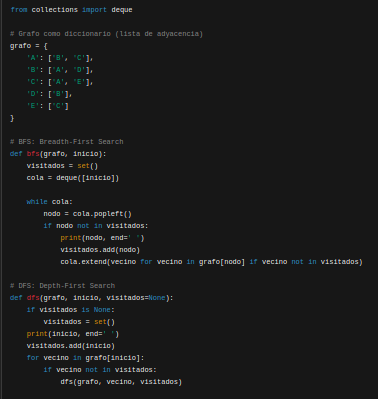

Un grafo es una estructura matemática que se utiliza para modelar relaciones entre objetos. Está compuesto por nodos (o vértices) y aristas (o enlaces) que conectan estos nodos.
Los grafos se utilizan en diversas áreas como informática, matemáticas, redes sociales, logística, biología, entre otros, para representar y analizar relaciones, conexiones o flujos.
Las partes principales de un grafo son:
Tipos de grafos:
Los grafos tienen un amplio campo de acción en áreas como la optimización de rutas, análisis de redes sociales, diseño de circuitos electrónicos, modelado de sistemas biológicos, y más. Su aplicación se extiende a cualquier problema que involucre relaciones o conexiones entre elementos.
BFS (Breadth-First Search): Representa un recorrido por niveles en un grafo.
DFS (Depth-First Search): Representa un recorrido en profundidad en un grafo.
Juan Guillermo López Cortés
Luis Alejandro Téllez Forero
Sergio Tovar Perdigón